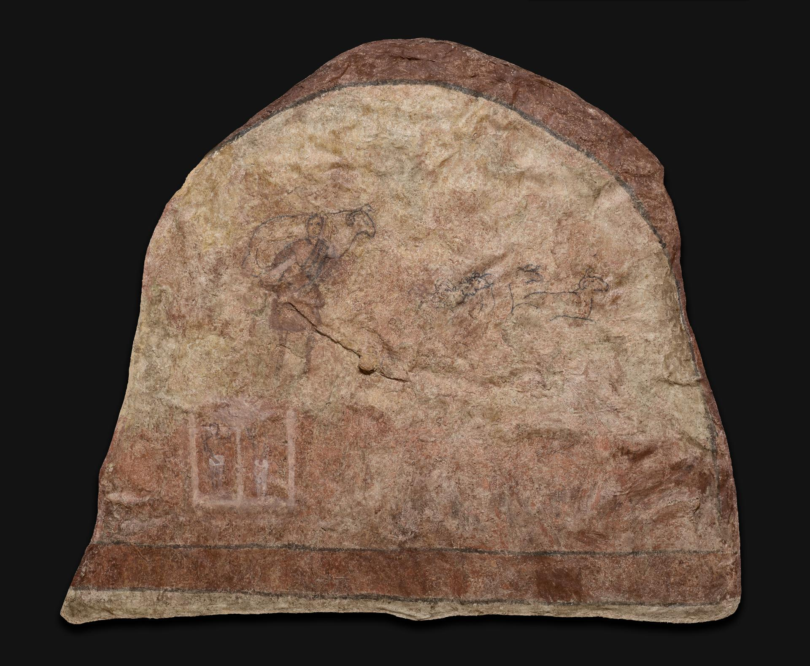
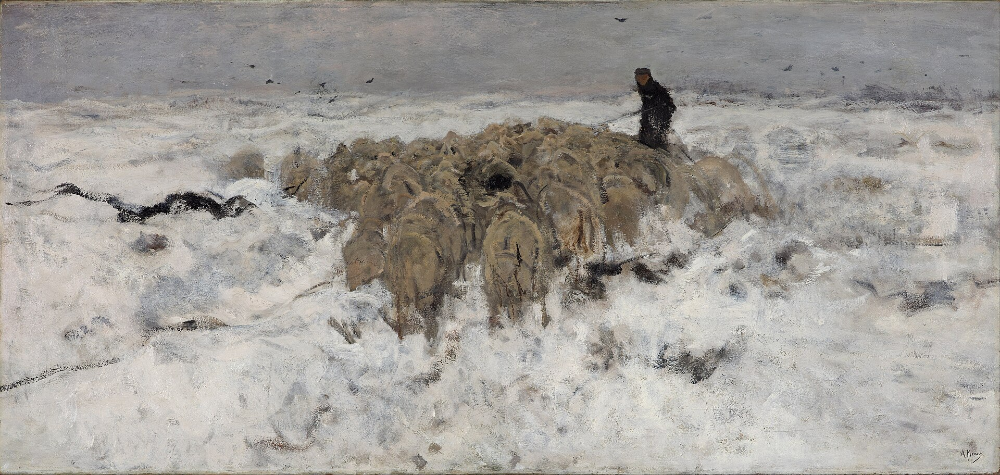
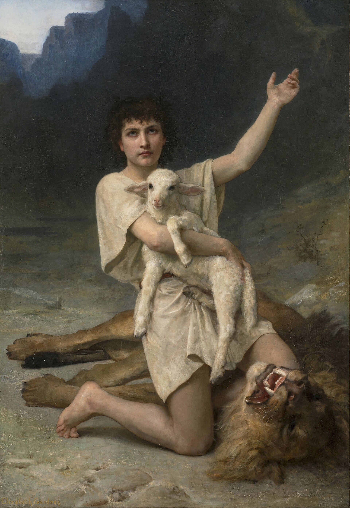

L’Éternel est mon berger : je ne manquerai de rien.
Il me fait reposer dans de verts pâturages,
il me dirige près des eaux paisibles.
Il restaure mon âme,
il me conduit dans les sentiers de la justice, à cause de son nom.
Quand je marche dans la vallée de l’ombre de la mort,
je ne crains aucun mal, car tu es avec moi :
ta houlette et ton bâton me rassurent.
Tu dresses devant moi une table, en face de mes adversaires ;
tu oins d’huile ma tête, et ma coupe déborde.
Oui, le bonheur et la grâce m’accompagneront tous les jours de ma vie,
et j’habiterai dans la maison de l’Éternel jusqu’à la fin de mes jours.
La Parole. La Louange. L'Impact.